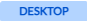
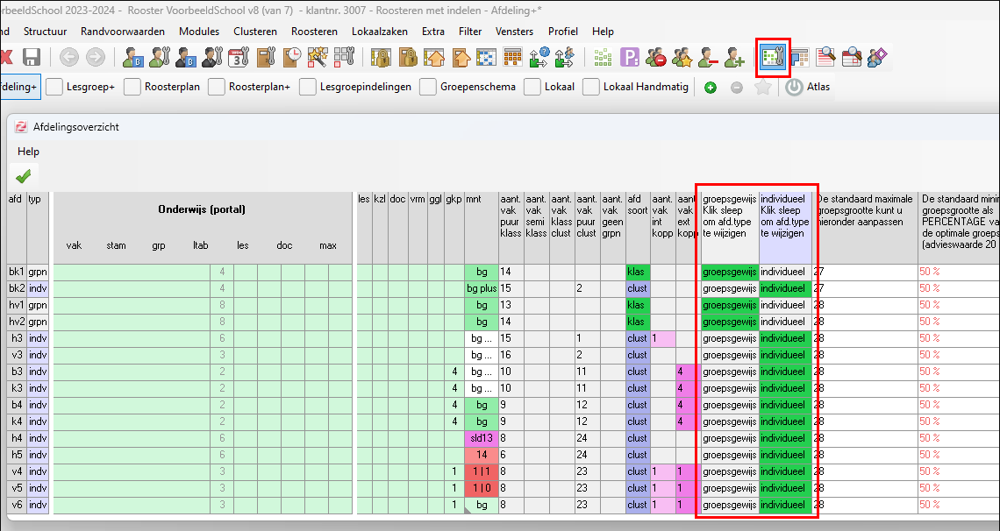
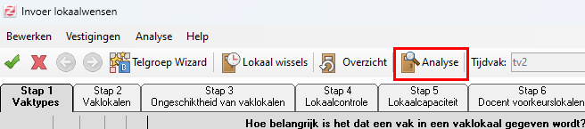
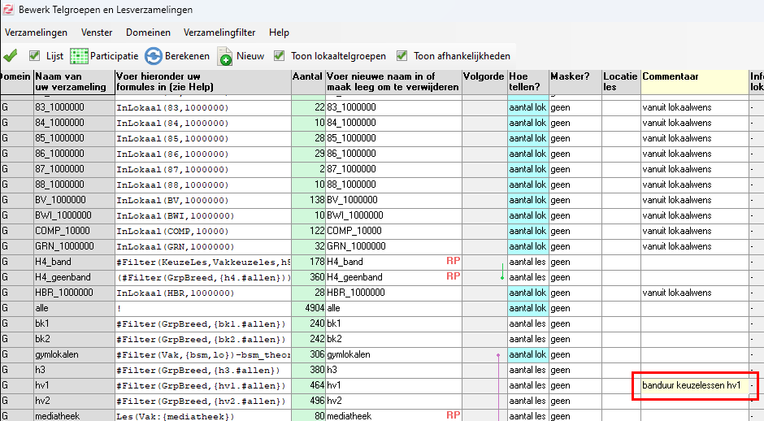
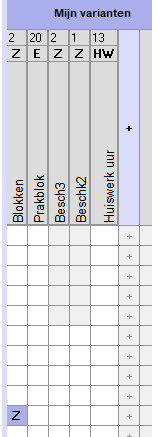
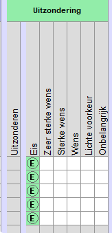
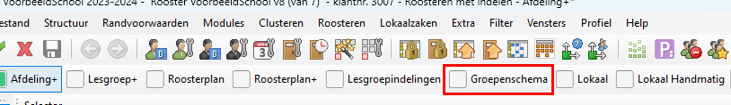
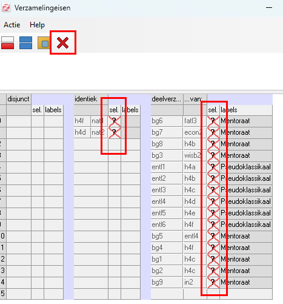
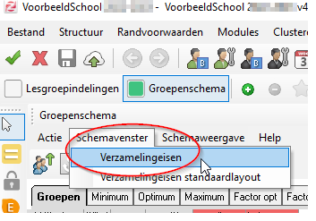
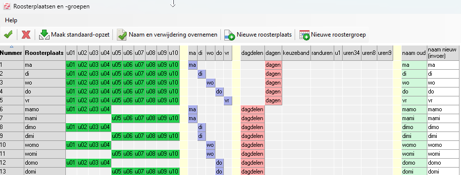

Project op bestaand roosterproject

Als u een nieuw desktopproject hebt aangemaakt op basis van een bestaand roosterbestand zijn uw instellingen van het voorgaande schooljaar meegenomen. Echter, u heeft nu waarschijnlijk ook een hoop "rommel" meegenomen.
Op deze pagina leest u welke onderdelen u na kunt lopen om het nieuwe schooljaar schoon en efficiënt te beginnen!
Naam roosterbestand
Via menu Projectbeheer > Naam wijzigen kunt u de naam van uw roosterbestand wijzigen.
Leerlingdomein
- Ga naar Projectbeheer > Domeinen en klik op het domein Leerling.
- Klik in menu Weergave en controleer of Lijstweergave aanstaat.
- Selecteer alle leerlingen (ctrl+A).
- Klik op de knop
en bevestig met . Dit zorgt ervoor dat eventuele individuele randvoorwaarden / lesgroepindelingen en extra eigenschappen verwijderd worden. U kunt met een gerust hart het leerlingendomein leegmaken. Uw leerlinggegevens worden immers opgeslagen in het Portal. Het leerlingendomein wordt weer gevuld met verse gegevens als u downloadt vanuit het Portal. Voor het volgende punt (lesdomein) geldt hetzelfde.
Lesdomein
- Ga naar Projectbeheer > Domeinen en klik op het domein Les.
- Selecteer alle lessen (ctrl+A).
- Klik op de knop
en bevestig met . Dit voorkomt eventuele spooklessen (lessen zonder lesgroep, zonder docent).
Toets- en Mondelingendomein
- Ga naar Projectbeheer > Domeinen en klik op het domein Toets.
- Selecteer alle toetsen (ctrl+A).
- Klik op de knop
en bevestig met . Bovenstaande doet u ook in het mondelingendomein.
Docentendomein
Er is niets op tegen om ook het Docentendomein leeg te maken. Vanuit het Portal kunt u de nieuwe gegevens weer downloaden daarna en u begint weer met een schone start. Het kan ook handig zijn uw docenten in de Desktop te behouden.
Note
Docentafkortingen met hoofdletters
Gebruikt u hoofdletters voor de docentafkortingen in de Desktop? Dan is het handig uw docenten niet weg te gooien. U zult een nieuwe docent handmatig in het docentendomein om moeten zetten naar een code in hoofdletters, omdat Zermelo standaard werkt met kleine letters. Dit kan door de docent te selecteren in het domein Docent en via menu Bewerken > Wijzig de code aan te passen.
Heeft u OOP-ers of directieleden als docenten in uw Desktop? Deze worden standaard niet verwijderd als u de docentgegevens uit het Portal bijwerkt. Haal deze handmatig uit het domein Docent. In het portal bij Personeel > Overzicht is in te stellen wie OP, OOP of DIR is.
Randvoorwaarden
- Ga naar Roosteren > Roosteren.
- Maak een keuze voor Roosteren (+herindelen) of Roosteren (-herindelen).
Docenten
Loop de randvoorwaarden bij Docenten Basis en Docenten Uitgebreid langs. Niet alle randvoorwaarden zullen het volgende schooljaar van toepassing zijn.
Maakt u gebruik van uurgroepen of docentverzamelingen? Werk deze dan bij naar actuele situatie.
Leerlingen
- Heeft iedere afdeling minimaal één leerling? Afdelingen zonder leerlingen worden namelijk niet getoond in de roosterschermen van de Desktop.
- Controleer de randvoorwaarden bij Leerlingen Basis en Leerlingen Uitgebreid.
- Controleer bij Leerlingen Uitgebreid het bijwoonbelang
- Staat de instelling Groepsgewijs / Individueel goed ingesteld in het scherm Afdelingsoverzicht? Dit scherm is te openen via het menu Structuur > Afdelingsoverzicht. We adviseren u om alle afdelingen op Individueel te zetten.

Lokalen
- Kloppen de lokaalinstellingen nog? Waren er vorig jaar uitzonderingen ingesteld die dit jaar niet meer gelden? Controleer de instellingen via het scherm Lokaalwensen Basis.
- Ziet u rode driehoekjes bij uw lokaalinstellingen?

Klik dan in het menu Bewerken op Standaardiseer.
- Gebruik de knop
om te controleren of er tegenstrijdigheden in de lokaalinrichting zitten.
Doorloop na het aanpassen van de lokaalrandvoorwaarden altijd opnieuw de Telgroep wizard.
Telgroepen en Lesverzamelingen
- Gooi alle telgroepen en lesverzamelingen weg waarvan u niet meer weet waar deze voor zijn. Als het niet lukt om een telgroep of lesverzameling te verwijderen omdat er nog een masker aanhangt, moet u eerst de randvoorwaarde bij Docenten of Leerlingen verwijderen.
Note
Maak gebruik van de kolom Commentaar
Bij de telgroepen en lesverzamelingen kunt u commentaar invullen. Zo kunt u duidelijk maken waar de telgroep of lesverzameling voor gemaakt is.

Controleer ook de randvoorwaarden van de telgroepen.
Onderwijskundig
- Controleer vooral de varianten die zijn aangemaakt. Zijn deze nog correct? Zijn ze aan de juiste vakken/afdelingen gekoppeld?

Controleer of er nog onterecht uitzonderingen zijn ingesteld.

- Zijn er docenten die willen afwijken voor hun vak/klas? Pas dat eventueel aan bij het perspectief Per docent.
Verzamelingseisen verwijderen
Onbewust kunnen er verzamelingseisen worden overgenomen van het voorgaande project. U doet er goed aan alle oude verzamelingseisen te verwijderen.
- Ga naar het profiel Groepenschema:
- Selecteer een afdeling.
- Selecteer de verzamelingseisen.
- Klik op de knop
.


Note
Venster Verzamelingseisen niet zichtbaar?
Indien het venster van de verzamelingseisen niet zichtbaar is, dan is deze te vinden via:

Roosterplaatsen en roostergroepen
Controleer wat er aan roosterplaatsen en roostergroepen opgeschoond kan worden. Dit scherm is te openen via het menu Structuur > Roosterplaatsen en roostergroepen.
